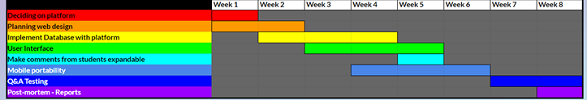

James Pitt
BSc Programmer

Product owner
Optimisation March 5, 2019
The assignment given to me inherently requires that I optimise the website sufficiently and I will be documenting the processes that were involved with this. The tools which have been used and/or will be used are programs such as Atom - the interpreter to write the code for the new system. NodeJS - the JavaScript variant that execute and display the website without the need of hosting it on a server among other supportive values that accompanies Node. PhpMyAdmin - this is the website which currently hosts the database and is accessed to view and manipulate database data so that it can be used for the new system. Currently I am still in the planning phase of the development and transition for the website.

Product owner
Peer review system March 2nd, 2019
This is the very first thing I worked on when creating the new PO system, I figured I would work on the login page and build a site around that. This is due to the fact that the fundamental feature of a Product Owner system is that someone can log-in and perform actions as the individual. This code originally involved a for loop which went through each account and checked the username against each password, this meant in the current state of the log-in system it would iterate through 9 different checks. This was unnecessary and an initial oversight. The new code only checks the username against the password relative to the username number in the array. In future, this may become obsolete when incorporating Databases. For now, this is a more optimal way to test the log in system and manage larger numbers of test accounts.
The Product Owner system
Introduction February 20th, 2019
I have been tasked with revamping the current Product Owner system, this was a task delegated to me as part of the Agency team. The current peer review system is written in PHP and hosted in such a way that makes it very difficult for modular additions to be added. Therefore my task is to translate the code to a more modern platform (NodeJs was chosen for this) and allow for future additions to be made to the system easily by structuring the system in a modular fashion.
An Autism Simulation
Bit of optimisation February 11th, 2018
The project I am optimising is the prototype I am developing for my dissertation- an autism simulation through a text adventure. This involves defining a number of emotion states which are required to be randomised everytime the player makes a decision. However I realised that I didn’t need to run through the cycle to set moods each time and could instead run the mood function when the program opens and assign values to all future decisions. The premise of the game is that the player is having a conversation with an AI who has volatile emotions and can react strangely to prompts which might not logically seem as though they should elicit such a reaction. This was done by selecting a dialogue option and then having the AI change their behaviour to a random emotion. However, sometimes the AI would trip up on itself and go into an infinite loop of changing emotions, similar to when Jim Carey first don the mask in ‘The Mask’. This code is responsible for selecting the emotion.

This was the code which fired everytime a button was pressed, this was cumbersome as the program was required to generate a random number everytime a button was pressed.
 With this new function in the starter phase of the code “changeEmotionAll”, this runs through the code and assigns an emotion to every decision taken by the player.
This cuts down the possible number of emotions from infinite to 28.
With this new function in the starter phase of the code “changeEmotionAll”, this runs through the code and assigns an emotion to every decision taken by the player.
This cuts down the possible number of emotions from infinite to 28.
 This is a relatively simple matter of optimisation, but still one I put my project through.
Updates to come.
This is a relatively simple matter of optimisation, but still one I put my project through.
Updates to come.
An Autism simulation
Change of plan February 2nd, 2019
I have decided to change the language with which I am developing this project with from Ren'Py to Visual Basic, this is due to having more knowledge in Visual Basic and the belief that Visual Basic is fit for purpose for the type of prototype I am constructing.
An Autism Simulation
Project: Autimulation October 2nd, 2018
I have started development for a game which I am truly passionate about. The game involves attempting to replicate the experience of autism through virtual gaming environments. This is part of my dissertation where I will use the game to collect data to see if it is possible to replicate such an experience. The deadline I've set for myself to have this project achieved by is the end of March 2019.
This Website was made using assets from W3